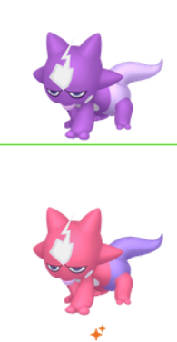
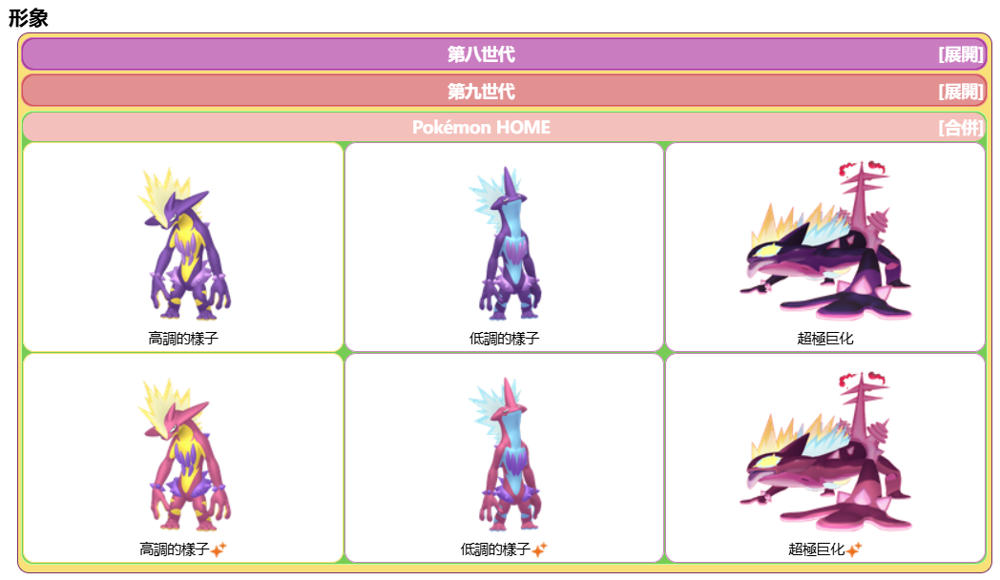

基本介紹
顫弦蠑螈基於龐克搖滾及大冠歐螈，尤其是處於繁殖期長出鋸齒狀高聳背鰭的雄性。
它的設計靈感來自搖滾樂手，擁有非常鮮明的外觀和充滿音樂感的技能。
性格取決於它在進化時的兩種型態——低調型態與高調型態，它們各自的顏色和外觀略有不同。
其他形象
毒電嬰造型與異色版本：

顫弦蠑螈造型與異色版本：

顫弦蠑螈基於龐克搖滾及大冠歐螈，尤其是處於繁殖期長出鋸齒狀高聳背鰭的雄性。
它的設計靈感來自搖滾樂手，擁有非常鮮明的外觀和充滿音樂感的技能。
性格取決於它在進化時的兩種型態——低調型態與高調型態，它們各自的顏色和外觀略有不同。
毒電嬰造型與異色版本：
顫弦蠑螈造型與異色版本：